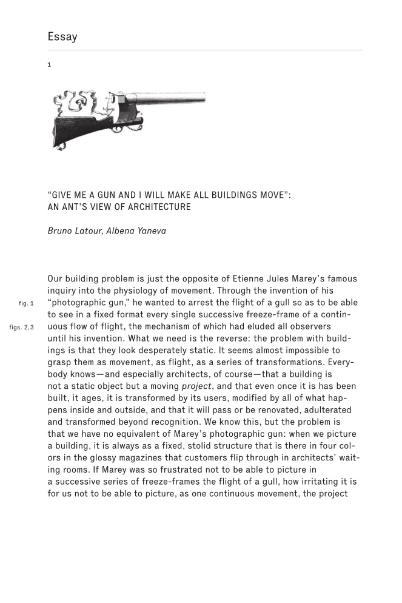
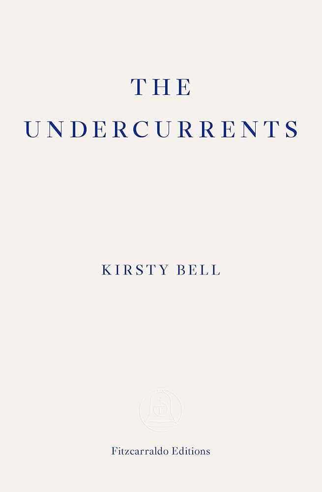
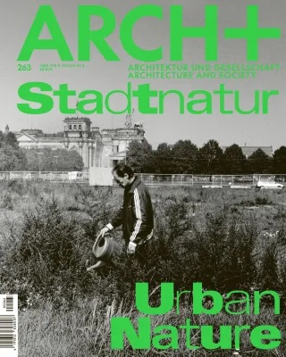
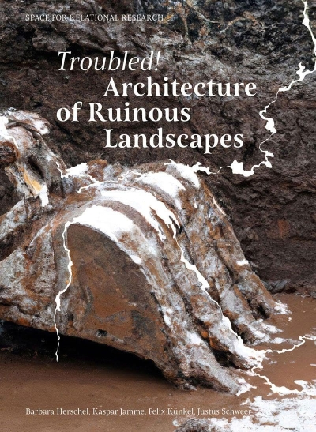
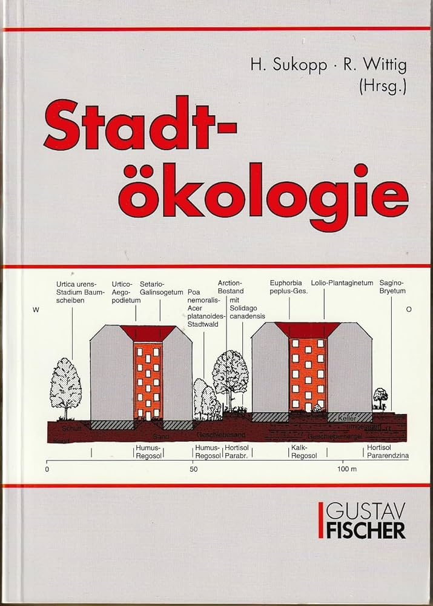

Application for a Student Research Assistant Position — CUE, TU Berlin
Lara Luise Brenner · l.brenner@campus.tu-berlin.de · 015777797700
Dear Team at CUE,
I am writing to apply for the student assistant position in the teaching activities of your field at TU Berlin. My background in architecture and urban design combines spatial analysis, communication, and a strong interest in the ecological and social dimensions of urban space, and I would be glad to get a chance to contribute with these skills to the education of Bachelor students.
What particularly draws me to your chair is its understanding of urban design as a field where ecological, social, and spatial questions are brought into dialogue. This emphasis closely matches my own interests in how urban space is shaped by material, historical, and ecological processes, and how these can be explored through design, mapping, and teaching.
During my studies in architecture and urban design, I have deepened this interest through both academic and collective work. As co-founder of the student collective perspektiv;wechsel, I have co-organized lecture series and workshops on urban perception, reception, and power relations in the built environment, which strengthened my ability to structure content, prepare materials carefully, and support collaborative learning processes.
In my former position as a working student at ZRS Architekten, I worked with construction documentation, building surveys, and damage mapping. This has trained me to translate complex requirements into clear drawings and documents, to work reliably within established workflows, and to collaborate constructively in a team. In parallel, my semester studies at Prof. Silvan Linden’s “Transect” studio focus on cartographic and spatio-temporal methods for analysing urban ecosystems. I am especially taken by learning about how the Berlin-Warschau Urstromtal has formed. In this context I learned about Harold Fisk’s Meander Maps of the Mississippi River and since then I find myself scrolling instead of socials, through QGIS, Google Earth, and Time Machine to find and observe the formation of paleo-channels and the way water formed this earth.
The tasks in your advertisement (preparing teaching materials, revising course content, pre-correcting assignments and examinations and documenting semester projects) correspond closely to work I have already done in academic and practice-based contexts. I work confidently with InDesign, CAD software, GIS tools such as QGIS, and common image-editing applications, and I am comfortable working in both German and English.
Beyond these practical skills, I would bring strong interest in urban ecology and a collaborative working style. I am especially interested in how teaching can help students think about cities not only as designed objects, but as changing socio-ecological systems.
I would be very pleased to support your teaching team and contribute to the preparation and documentation of your Bachelor modules from 1 September 2026 onward. Thank you very much for considering my application.
Sincerely,
Lara Luise Brenner
Space Time Transect
with Eliott Croubalian
In our research, the Panke River serves as a primary example of a territory in constant transformation. Shaped first by glacial melt, the landscape remains in motion and the river would slowly erode its own path, were it not for our anthropological impact. We observed that human attempts to freeze these meanders in time, in the name of efficiency, often backfire, because the landscape resists static control. This led us to a shift in perspective: we no longer see the territory as a fixed condition, but as an entropic mixture. To map this entropy, we have to understand time as an active physical force, one that produces both decay and accumulation.


To make this process legible, we first organized the terrain through a matrix of geography, history, and condition. This method worked well in pairs: history and geography could produce palimpsests, while history and condition could be traced through datasets and chronological shifts. But when all three axes were combined, the center of the matrix collapsed into a void. The result was what we came to call an “overlay overload,” in which too many layers rendered the drawing unreadable.
To address this problem, we developed the space-time transect. This instrument rests on two conceptual operations. First, we flatten spatial depth: the vertical space of a traditional map is compressed until geography becomes a single horizontal line of distance, x. Then we replace the vertical axis with time, t. In this way, we give up spatial depth in order to gain temporal depth. The result is a map that allows historical events and material conditions to be grasped with an intuitive understanding of what we are already used to from reading space-dimensional maps. We imagine Geological strata, ownership patterns, and hydrological traces along a timeline can then be understood and made accessible.

accompanying literature:







Midterm status, SS 2026. The project is still very much a work in Progress
As it rains, the soil gets wet
with Manuel Rademaker

Es regnet, es regnet,
die Erde wird nass!
Und wenn's genug geregnet hat,
dann wächst auch wieder Gras!
(German nursery rhyme)
Es regnet, die Erde wird nass.
I’m sitting here looking at this exposed patch of ground.
No Thing, no plan, only a beginning.
The ground is open again.
It could absorb water, hold roots, regulate temperature.
Already, a thin green film is spreading across the surface.
Accomplished through subtraction rather than addition.
The removed material lies beside me—enough to sit, rest, and stay.
Nothing here is complete.
No promises were given. It is a simple principle:
Exposing not condensing.
As it rains, the soil gets wet.
Submitted to the competition 30 Square Metres of Building Culture. The project was not chosen to become reality.

Stegreif project in the course Strategien für nachhaltiges Planen und Bauen. The brief called for designing approx. 160 m² of residential floor space in a building gap — including an apartment for 4 people with a private outdoor area, and a separately rentable annexe apartment. The aim was to develop strategies for well-lit, energy-efficient housing within challenging parameters. My submission was deemed unassessable and recorded as not completed.
Mapping Damage
at ZRS Architekten Ingenieure, Berlin
Damage mapping as preparation for structural assessment and restauration of the remaining Structure. Based on a Holzschutzgutachten, Point cloud scans and personal inspection of the building. Modeling of the Dachstuhl, Cartographic analysis of damage and development of system for representation (IFC DataBases) of damage as part of my working student role at ZRS Architekten, Berlin.


BRENNER
| Education | |
| 2019 Abitur | General university entrance qualification — Evangelisches Gymnasium Hermannswerder, Potsdam. Grade: 1.3 |
| 2016 – 2017 | Exchange year in Japan, Niigata Prefecture, Shibata (AFS) |
| 2019 – 2020 | Grundstudium "MINTgrün", Technische Universität Berlin |
| 2020 – 2025 | B.Arch. Architecture and Urban Design, FH Potsdam. Grade: 1.1 |
| 2022 (winter semester) | Erasmus+ exchange semester, Politecnico di Milano |
| since 2025 | M.Arch. Architecture program, TU Berlin |
| Practice | |
| August – October 2023 | Internship at ZRS Architekten Ingenieure, Berlin |
| November 2023 - April 2026 | Working student at ZRS Architekten: Construction documentation, green roof planning, energy-efficient timber retrofit, visualisation, point cloud processing |
| Software | |
| ArchiCAD (+++), Vectorworks (++++) | |
| Blender (+++), Cinema 4D (++) (Corona) | |
| InDesign (+++), Affinity (+), Photoshop (++), Illustrator (+) | |
| Premiere Pro (+), DaVinci Resolve (++) | |
| Nomad Sculpt (++), Procreate (+++) | |
| Microsoft Office Suite (+++) | |
| QGIS (+++) | |
| Languages | |
| German (native) | |
| English (C1) | |
| Japanese (N4) | |
| Italian (A1) | |
| Latin (Latinum) | |
| Engagement | |
| since 2021 | Co-founder of collective perspektiv;wechsel |
| 2023 (summer semester) | Advisory member, department council (FB2), FH Potsdam |
| 2023 – 2024 | Elected member, department council (FB2), FH Potsdam |
| Honors | |
| 2023 (summer semester) | 3rd Prize, student competition "Campuswohnen", FH Potsdam |
| 2023 – 2024 | Deutschlandstipendium scholarship |
| 2025 | Ehrenamtspreis der Fördergesellschaft der Fachhochschule Potsdam, as part of perspektiv;wechsel |
| Further | |
| 2013 – 2019 | Layout editor, school newspaper Der Tornowgraph |
| 2015 – 2019 | Certified school paramedic |
| 2016 – 2018 | Team leader, AFS Intercultural Encounters |
| 2018 – 2023 | Minijob, Boulderhalle 7a+ |
| Events that I took part in organizing at Collective perspektiv;wechsel | ||
| 24.05.2022 | Gendergerechte Stadtplanung | Sophia Lenz (M. Urbane Zukunft) |
| 30.05.2022 | design für alle — nicht nur barrierefrei, sondern attraktiv und komfortabel für alle | Matthias Knigge (Grauwert, Büro für Inklusion & demografiefeste Lösungen) |
| 07.06.2022 | postcolonial potsdam — kolonialgeschichte und postkoloniales schweigen in potsdam | Alexandra Wuest (Postcolonial Potsdam) |
| 22.11.2022 | HANDWERK × ARCHITEKTUR | Isabelle Vivianne; Jenny Hamerla & Isabel Schmidt (Baufachfrauen) |
| 29.11.2022 | Gendergerechte Stadtplanung — Einblicke aus der Praxis | Dr. Mary Dellenbaugh-Losse (Urban Policy) |
| 13.12.2022 | whose city? — Obdachlosigkeit, Architektur und die Stadt | Dr. Daniel Talesnik (Architekturhistoriker) |
| 25.04.2023 | Architektur und Mensch: Raum in Wechselwirkung mit Wahrnehmung, Körper und Gesundheit | Alexandra Correll & Dr. Mathias Ballestrem (Interdisziplinäres Forum Neurourbanistik e.V.) |
| 02.05.2023 | Baustelle Gleichstellung — Podiumsdiskussion | Karin Hartmann; Katja Melan & Dagmar Chrobok-Dohmann (AG Gleichstellung der Brandenburgischen Architekt:innenkammer) |
| 23.05.2023 | Bezahlbar und Klimagerecht wohnen | Dr. Lisa Vollmer (Leibnizinstitut für Raumbezogene Sozialforschung) |
| 24.10.2023 | Realitätscheck Lehmbau | Dipl.-Ing. Ulrich Röhlen |
| 07.11.2023 | Kindgerechtes Bauen | Kathia Ecks & Lena Arnold (Baukind) |
| 21.11.2023 | Rurale Potenzialräume — Zukunftswerkstatt in Luckenwalde | Kollektiv Variable X (Clara & Lisa) |
| 05.12.2023 | Partizipative Planung | Fee Kyriakopulos & Helena Rafalsky (Baupiloten) |
| 28.05.2024 | Erfahrungswerte Baustelle — Podiumsdiskussion | Claudia Alvino; Etta Seifert; Nicole Fienke; Magdalena Karbach (ZRS) |
| Me on the panel — Reihe Nachhaltiges Bauen, FH Potsdam | ||
| 11.10.2023 | Was tun bei zunehmenden Wetterextremen wie Trockenheit und Starkregen? – Das Prinzip „Schwammstadt"! | Prof. Dr.-Ing. Gunar Gutzeit (FHP); Prof. Maren Brakebusch, Dr. Darla Nickel (Regenwasseragentur), Friederike Böttcher |
| 24.04.2024 | Die Wärme der Zukunft kommt aus der Erde – Praxisbeispiele und Erfahrungswerte für Geothermie | Michael Viernickel (eZeit-Ingenieure); Eckard Veil (EWP), Prof. Dr. Ingo Sass (GFZ Potsdam) |
| 19.06.2024 | Die Natur der Zukunft wächst in der Stadt – an der Wand, auf dem Dach, auf Brachflächen | Jakob Nolte (Botaniker); Marco Schmidt (BBSR), Claus Herrmann (hochC Landschaftsarchitekten) |
| 09.10.2024 | Die Baustoffe / Gebäude der Zukunft sind wiederverwendet – Erfahrungen und Beispiele | Jurek Brüggen (Architekt); Carolina Mojto (Freiraum in der Box), Prof. Dr.-Ing. Klaus Pistol (FHP) |
| 04.12.2024 | Die Baukultur der Zukunft ist die Umbaukultur – von der „grauen" zur „goldenen" Energie | Reiner Nagel (Bundesstiftung Baukultur); Prof. Silke Straub-Beutin, Frank Schönert (Hütten und Paläste) |